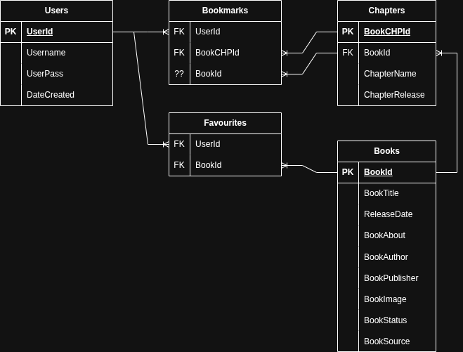

Database Design
This includes the following:
Tables:
- Books
- Chapters
- Users
- Bookmarks
- Favourites
Table fields:
Books
| BookID |
BookTitle |
ReleaseDate |
BookAbout |
BookAuthor |
BookPublisher |
BookImage |
BookStatus |
BookSource |
| PK, Int, auto increment, unique |
varchar(50) |
DateTime |
varchar(255) |
varchar(50) |
varchar(50) |
varchar(50) |
varchar(20) |
varchar(50) |
Chapters
| BookCHPID |
BookID |
ChapterName |
ChapterRelease |
| PK, Int |
FK, Int |
varchar(50) |
Datetime |
Users
| UserID |
UserName |
UserPass |
DateCreated |
| PK, Int, Auto increment, Unique |
varchar(50) |
varchar(50) |
Timestamp |
Bookmarks
| UserID |
BookCHPID |
BookID |
| FK, Int |
FK, Int |
??, Int |
Favourites
| UserID |
BookId |
| FK, Int |
FK, Int |
Creating Tables SQL
-- CREATING THE USERS TABLE
CREATE TABLE "Users" (
"UserId" INTEGER NOT NULL UNIQUE,
"Username" TEXT NOT NULL UNIQUE,
"UserPass" TEXT,
"DateCreated" TEXT,
PRIMARY KEY("UserId" AUTOINCREMENT)
);
Creating Books Table
-- CREATING THE BOOKS TABLE
CREATE TABLE "Books" (
"BookId" INTEGER NOT NULL UNIQUE,
"BookTitle" TEXT,
"ReleaseDate" TEXT,
"BookAbout" TEXT,
"BookAuthor" TEXT,
"BookPublisher" TEXT,
"BookImage" TEXT,
"BookStatus" TEXT,
"BookSource" TEXT,
PRIMARY KEY("BookId" AUTOINCREMENT)
);
Creating Chapters Table
-- CREATING THE CHAPTERS TABLE
CREATE TABLE "Chapters" (
"BookChpId" INTEGER,
"BookId" INTEGER,
"ChapterName" TEXT,
"ChapterRelease" TEXT,
FOREIGN KEY("BookId") REFERENCES "Books"("BookId")
);
Creating Bookmarks Table
--CREATING THE BOOKMARKS TABLE
CREATE TABLE "Bookmarks" (
"UserId" INTEGER,
"BookId" INTEGER,
"BookChpId" INTEGER,
FOREIGN KEY("UserId") REFERENCES "Users"("UserId")
);
Creating Favourites Table
-- CREATING THE FAVOURITES TABLE
CREATE TABLE "Favourites" (
"UserId" INTEGER,
"BookId" INTEGER,
FOREIGN KEY("UserId") REFERENCES "Users"("UserId"),
FOREIGN KEY("BookId") REFERENCES "Books"("BookId")
);
Relationship of tables

Queries required:
Route('/'):
Get Recently added
SELECT BookTitle, BookImage
FROM Books
ORDER BY BookId DESC
LIMIT 5;
Route('/Catalogue')
Get Books to display
SELECT BookTitle, BookImage
FROM Books;
Route('/Catalogue/:BookID')
Get Specific book info
Select BookTitle, BookImage, BookAuthor, BookPublisher, BookAbout, BookSource
From Books
WHERE BookId = (?);
Get all chapters related to the book
SELECT BookTitle, ChapterName, ChapterRelease
FROM Books B
JOIN Chapters CHP
ON B.BookId = CHP.BookId
WHERE B.BookId = (?);
Get specific book bookmarks
SELECT BookTitle, ChapterName
FROM Books B
JOIN Chapters CHP
ON B.BookID = CHP.BookID
WHERE B.BookID = (?) AND CHP.BookCHPID = (
SELECT BookCHPID
FROM Bookmarks
WHERE UserID = (?) AND BookID = (?));
Route('/Profile/:UserID')
Get user info
SELECT *
FROM Users
WHERE UserId = (?);
Get user favourites
SELECT BookTitle, BookImage
FROM Books B
JOIN Favourites F
ON B.BookId = F.BookId
WHERE F.UserId = (?);
Route('/Signup') POST
Get the user data and insert into user table
-- CHECKS TO SEE IF USERNAME IS UNIQUE
SELECT *
FROM Users
WHERE Username = (?);
-- IF username not found then insert
INSERT INTO Users (Username, UserPass)
VALUES (?, ?);
Route('/Login') POST
Check to make sure user account exists
-- Checks to see if user is in db
SELECT UserId
FROM Users
WHERE Username = (?);
-- If user does exist continue to check pass
SELECT UserPass
FROM Users
WHERE Username = (?);
-- Compare the password with what the user inputted and validate
Route('/Catalogue/book/:BookId:BookChpId') POST
Insert/update into bookmark
-- CHECK FOR EXISTING BOOKMARK
SELECT BookId
FROM Bookmarks
WHERE UserId = (?) AND BookId = (?);
-- IF IT EXISTS
UPDATE Bookmarks
SET BookCHPID = (?)
WHERE UserId = (?) AND BookId = (?);
-- IF IT DOES NOT EXIST
INSERT INTO Bookmarks (UserId, BookId, BookChpId)
VALUES (?, ?, ?);
Remove bookmark
DELETE FROM Bookmarks
WHERE UserId = (?) AND BookId = (?);
Route('/Catalogue/book/:BookId') POST
Add book to favourites
INSERT INTO Favourites (UserId, BookId)
VALUES (?, ?);
Remove book from favourites
DELETE FROM Favourites
WHERE UserId = (?) AND BookId = (?);